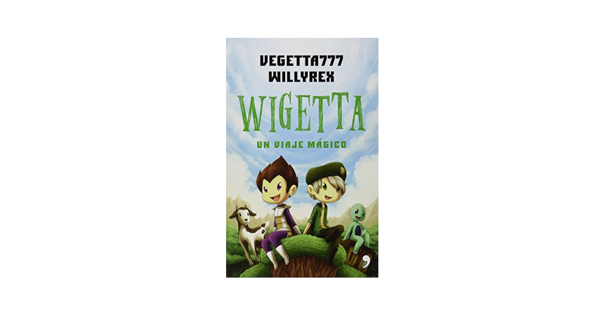

Soy un estudiante universitario de Ingeniería de Software.Me considero una persona proactiva y responsable, capaz de cumplir efectivamente con todos los desafíos que se me presenten. Me apasiona en particular el manejo y diseño de las bases de datos. Disfruto mucho del modelado de esquemas eficientes y planeo especializarme en esta clase de entornos.
También me considero una persona bastante locuaz y he de mencionar que en mis momentos de ocio, me dedico con gusto a la refinada actividad de degustar y evaluar diferentes variedades de agua, convirtiéndome en un degustador aficionado.

Links de mis sitios web favoritos
YoutubeNetflix
E-campus
Mis libros favoritos
- La república de Platón

- La Divina Comedia

- El jardín de las mariposas
- Wigetta un viaje mágico 
- Leal

- Jugar videojuegos
- Escuchar música
- Salir con mis amigos
- Hacer ejercicio
- Catar botellas de agua
Mis pasatiempos
- Responsable
- Cumplo con mis deberes y obligaciones a tiempo y con dedicación.
- Proactivo
- Anticipo problemas y busco soluciones antes de que ocurran.
- Comunicativo
- Me expreso claramente y escucho a los demás para entender sus puntos de vista.
- Honesto
- Siempre digo la verdad y actúo con integridad en todas mis acciones.
- Empático
- Me pongo en el lugar de los demás y trato de comprender sus sentimientos y perspectivas.
Mis cualidades
- Oppenheimer

- Scarface

- American Gangster

- El Padrino

- The Prestige

Películas de suspenso
- Oppenheimer
- Django Unchained
- El caballero de la noche

- Gladiador 2
- Los juegos del hambre
- Los juegos del hambre: En llamas
Películas de acción
Películas favoritas
| Nombre de la Canción | Género | Cantante | Nombre del álbum | Año de lanzamiento |
|---|---|---|---|---|
| Timeless | Trap/R&B | The Weeknd/Playboi Carti | Hurry Up Tomorrow | 2024 |
| Enchanted Waterfall | Synth-pop / Pop ochentero | Tory Lanez | Alone at Prom | 2021 |
| The color violet | R&B alternativo/synthwave/trap soul | Tory Lanez | Alone at Prom | 2021 |